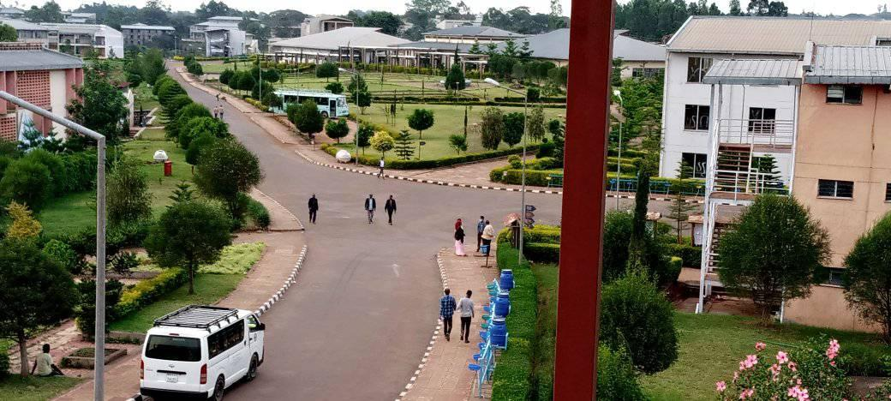

Mattu University (MaU) is a third-generation public university in Ethiopia, which was established in 2011 GC in the ever-green vicinity endowed with untapped natural resources based on the Regulation of House of Ministers No. 238/2011 to meet the demand of the country’s fast-growing needs for high-level professionals. If one browses a Google Map, he/she can spot that MaU is located in the southwestern part of Ethiopia, Oromia Regional State. It is situated in Mettu town which is 600kms away from the capital, Addis Ababa. MaU, which is a boarding university in its very nature, has its main campus covering over 350 hectares of land, fulfilling optimal facilities and infrastructure required to enhance its multifaceted undertakings. Since its establishment, the university has made remarkable and multifarious progress in training, research, and community service provision, increasing the number of qualified manpower by training at undergraduate and postgraduate levels.
To give a vivid historical account of its initial admission capacity, MaU started its career by enrolling 300 undergraduate regular students in 2011. In a very radical manner, by now, its admission capacity has reached over 22,000. When it comes to its program profile, the University is currently running 56 undergraduate and 42 graduate programs through diversified modalities in two campuses. These academic programs are run under eight colleges and three schools namely: College of Engineering and Technology, College of Natural and Computational Sciences, College of Public Health and Medical Sciences, Social Science and Humanities, College of Business and Economics, College of Education and Behavioral Sciences, College of Agriculture, College of Natural Resource Management, and School of Law, School of Commerce, and School of Agriculture. Parallel with teaching-learning, the university has been conducting research targeting to solve societal problems based on already identified thematic areas.
Mattu University’s human resource management started in 2011 G.C. This sector, when established, had a lesser number of employees than it currently has. The main aim of Mattu’s human resource management system is to achieve a well-organized human resource. The human resource management system is used to collect, analyze, and store information for every essential purpose and, just like that, to improve the information and gain insights for employees.